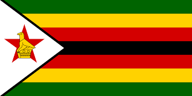
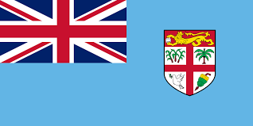
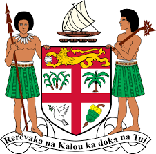

Введение
Флаги и гербы являются важными символами, представляющими страны, регионы и города. Они содержат значимые элементы, которые отражают культурные, исторические и политические особенности.
История Флагов
Флаги использовались с древних времён в качестве символов наций и армий. Они помогали отличать войска во время сражений и служили символом национальной гордости.
Подробнее об истории флагов можно прочитать здесь.
Гербы
Гербы возникли в средние века и использовались как личные или семейные символы. Они часто изображались на щитах, знаменах и печатях.
Больше информации о гербах доступно тут.
Флаги и Гербы Стран
Флаги и гербы каждой страны уникальны и имеют свою символику.
Ниже представлены примеры:
-
ФлагЗимбабве:
 -
Герб Зимбабве:
-
Флаг Фиджи
 -
Герб Фиджи
